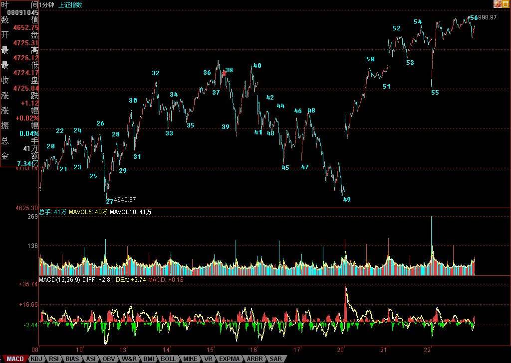

缠中说禅博客
缠中说禅 当代奇人，
一个永远只愿站立且希望探索、
展示人的所有潜能和可能的人，真实身份未明。

加息难阻热点蔓延
(2007/08/22 16:10:16 周三)
昨天说热点的蔓延如果能持续几天，就会燎原。而晚上公布的加息产生的新分力，使得大盘最后选择了今早所说的第二种中等力度的走势，这都是自然的选择，无须预测。任何有预测癖好的人，去当火星股评去吧，地球很危险的。
今天的走势，从纯技术的角度，连一个线段都不一定100%确认完成了，为什么？因为都没100%满足线段完成的条件。该线段完成的判断，显然属于第一种情况，本来第一种情况是属于相对简单的。但由于特征序列的分型一直没有最终完成，每一次上冲都新高，而下来都是一笔，形成所谓的向上倾斜三角型走势，该走势的特点就是99%回跌到三角形启动的位置，尾盘的跳水满足这一跌幅，但只是一笔，所以如果明早一下高开在5000点之上猛烈上攻，不再回跌到5000点下，那这线段还真一时完成不了。当然，一般情况下，这线段已经在今天的最高点处完成，所以在上面标记上56，但这是否最终确认，还要上面说的这种情况不发生。
一般来说，1分钟线段都不会延续这么长时间，能延续这么长时间，反而是一个技术上的重要提示，证明多方上5000点的冲动比较大，反复闹，而上面，有人不断压制，所以才会走出向上倾斜三角型的走势。而到尾盘，差不到一点见5000了，多方一股真气突然泻去，回到倾斜三角形起点位置。主要是如530般在亢奋状态突然被惊吓留下了后遗症，因此往往在关键时刻都来这么一下，尾盘收回去一半，只是表明多头上攻的欲望依然没得到满足，如此而已。
今晚的消息面很重要，连续两天有消息了，如果今晚还来什么调控玩意，这走势变数就大了。由于选择了第二种走势，短线政策面的变化起着重要分力的作用。如果今明两天没什么特别消息，使得关于政策面组合拳的猜想暂被搁置，那么，上上5000点去满足一下多头的欲望，也是理所当然的。
本ID早说了，5000点根本什么都不是，关键是5089点的2/3线，这线就如同下面4100多点的1/2，该线反复磨了三个月，上下跳来跳去，2/3线是否历史重演，这才是技术上需要注意的地方。
个股上，加息并没有延缓热点的蔓延速度，反而是加快了。银行股被压制，反而有利于其他股票的表现，本ID反复强调的二、三线股的逐步活跃已经成为现实，看看这几天涨停的都以什么股票为主就知道了。而且，这种蔓延已经逐步偏向三线股，特别是低价股，这是游资重新活跃的迹象。
这里，一个最现实的问题就出现了，银行股、地产股等等基金们玩的股票，和比较正规的大资金玩的一、二线大股，与游资搞的二、三线小股之间争夺话语权的问题。后面，能使大盘大幅度震荡的，一是政策面，二就是这话语权争夺战了。
散户当然喜欢三线股狂飞，像本ID的中铝那样的中字头股票，散户参与的热情也不会太高，特别现在，随便买个1万股就要40万，而一个5、6元的股票只要5、6万，哪个群众基础好就根本不用说了。
本ID对哪类股票飞都无所谓，本ID的持有结构本来就是一、二、三全有，大小通杀，现在又不买了，只持有，所以只有看戏的份。不过，本ID最喜欢的，其实是三线变一线的股票，谁又告诉你，三线不能变一线呢？
今天有事，刚才一路写东西，电话就不断，下面的事够忙一晚上了。
晚上回来可能晚点。
先下，再见。
